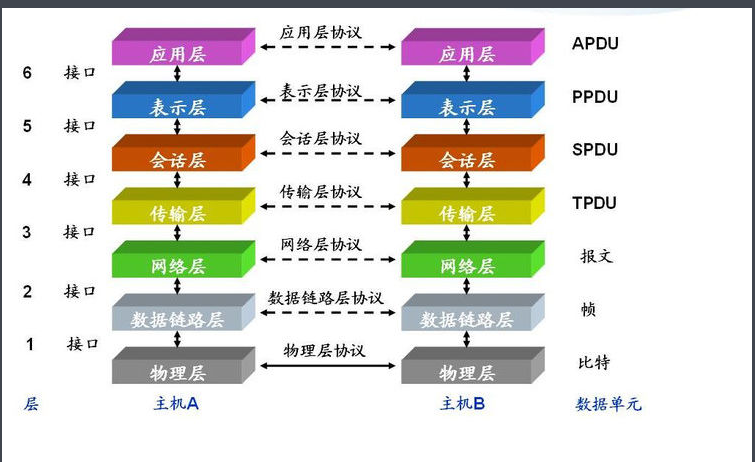

day20_网络编程
一、简介
1.概述
Java是 Internet 上的语言，它从语言级上提供了对网络应用程序的支持，程序员能够很容易开发常见的网络应 用程序。写出来
Java提供的网络类库(java.net)，可以实现无缝的网络连接，联网的底层细节被隐藏在 Java 的本机安装系统 里，由 JVM 进行控制。并且 Java 实现了一个跨平台的网络库，程序员面对的是一个统一的网络编程环境。
2.目的
直接或间接地通过网络协议与其它计算机进行通讯。
3.两个主要的问题
-如何准确地定位网络上一台或多台主机(IP地址) -->域名
-找到主机后如何可靠高效地进行数据传输。(网络协议)
4.TCP/IP参考模型
-TCP/IP 以其两个主要协议：传输控制协议(TCP)和网络互联协议(IP)而得名，实际上是一组协议，包括多个具有 不同功能且互为关联的协议。
-TCP/IP协议模型从更实用的角度出发，形成了高效的四层体系结构，即:
网络接口层
IP层
传输层
应用层
5.TCP 和 UDP
-传输控制协议TCP(Transmission Control Protocol)
a.面向连接的协议;
b.利用TCP协议进行通信的两个应用进程，一个是服务器进程。另一个是客户进程
-用户数据报协议UDP(User Datagram Protocol)。
a.面向无连接的运输层协议
b.没有客户端和服务器之分
区别:
a.TCP面向连接的，UDP面向无连接。TCP的安全度更高;(一个电话，一个是短信)
b.UDP不需要连接，传输效率高更。

二、InetAdress
1.概述
此类表示互联网协议 (IP) 地址。
2.Internet上的主机有两种方式表示地址：
域名：www.hzitxx.com --->给IP地址取别名，方便记忆
IP 地址：202.108.35.210 --->计算机的唯一标识(身份证) MAC:物理地址
DNS:解析域名变成ip地址。如果DNS域名就无法访问.
端口号:标识某一台电脑上面的某一个应用程序
一台电脑上面的IP地址不能重复;
端口范围[0-65535] 但是[0-1023]系统端口，一般不建议使用
自定义端口[1024-65535]之间。有一些动:8080(tomcat),3306(mysql),1521(oracle)
3.本机的IP
192.168.1.152
127.0.0.1
localhost
4.TCP程序设计
客户端---服务器模式(请求----响应模式)
客户端－服务器模型是最常见的网络应用程序模型。当我们上网冲浪时，我们所使用的浏览器(例如IE)就是一个客户端软件，而提供网页的站点必需运行一个WEB服务器。
一般而言，主动发起通信的应用程序属于客户端。而服务器则是等待通信请求，当服务器收到客户端的请求，执行需要的运算然后向客户端返回结果。
三、socket
1.简介
客户端套接字（也可以就叫“套接字”）。套接字是两台机器间通信的端点。
2.7种基本操作
连接到远程主机
绑定到端口
接收从远程机器来的连接请求
监听到达的数据
发送数据
接收数据
关闭连接。
3.常用的方法
| 方法 |
功能 |
| InetAddress getLocalAddress() |
返回对方Socket中的IP的InetAddress对象 |
| int getLocalPort() |
返回本地Socket中的端口号 |
| InetAddress getInetAddress() |
返回对方Socket中IP地址 |
| int getPort() |
返回对方Socket中的端口号 |
| void close() throws IOException |
关闭Socket，释放资源 |
| InputStream getInputStream() throws IOException |
获取与Socket相关联的字节输入流，用于从Socket中读数据。 |
| OutputStream getOutputStream() throws IOException |
获取与Socket相关联的字节输出流，用于向Socket中写数据。 |
四、ServerSocket
1.概述
服务器套接字，作为服务器，等待Socket进行访问连接。
2.常用方法
| 方法 |
功能 |
| Socket accept() throws IOException |
等待客户端的连接请求，返回与该客户端进行通信用的Socket对象 |
| void setSoTimeout(int timeout) throws SocketException |
设置accept()方法等待连接的时间为timeout毫秒。若时间已到，还没有客户端连接，则抛出InterruptedIOException异常，accept()方法不再阻塞，该倾听Socket可继续使用。若timeout值为0，则表示accept()永远等待。该方法必须在倾听Socket创建后，在accept()之前调用才有效。 |
| void close()throws IOException |
关闭监听Socket |
| InetAddress getInetAddress() |
返回此服务器套接字的本地地址 |
| int getLocalPort() |
返回此套接字在其上监听的端口号 |
| SocketAddress getLocalSocketAddress() |
返回此套接字绑定的端点的地址 |
4.1 单向接收
客户端(socket)发送请求到服务器端(ServerSocket)
1.服务器端(ServerSocket)步骤:
a.创建ServerSocket服务器，并且指定绑定的端口;
b.监听客户端是否发起请求. accept()方法;
c.获取输入(getInputStream())或者输出流(getOutputStream())接收，发送内容;
d.关闭socket和ServerSocket
2.客户端(Socket)步骤
a.创建Socket对象,指定IP地址，以及端口号;
b.获取输入(getInputStream())或者输出流(getOutputStream())接收，发送内容;
c.按照指定协议发送|接收内容
d.关闭socket
package com.hzit01;
import java.io.BufferedReader;
import java.io.IOException;
import java.io.InputStream;
import java.io.InputStreamReader;
import java.net.InetAddress;
import java.net.ServerSocket;
import java.net.Socket;
public class ServerSocketDemo {
public static void main(String[] args) throws Exception {
System.out.println("提供服务....");
ServerSocket serverSocket = new ServerSocket(6666);
while (true) {
Socket socket = serverSocket.accept();
InputStream inputStream = socket.getInputStream();
InputStreamReader inputStreamReader = new InputStreamReader(inputStream);
BufferedReader bufferedReader = new BufferedReader(inputStreamReader);
InetAddress inetAddress = socket.getInetAddress();
String hostName = inetAddress.getHostName();
String hostAddress = inetAddress.getHostAddress();
int port = socket.getPort();
String temp = null;
if ((temp = bufferedReader.readLine()) != null) {
System.out.println("hostName:" + hostName + " ip:" + hostAddress + " 端口:" + port + " 说" + temp);
}
inputStream.close();
inputStreamReader.close();
bufferedReader.close();
socket.close();
}
}
}
package com.hzit01;
import java.io.IOException;
import java.io.OutputStream;
import java.io.PrintWriter;
import java.net.Socket;
public class ClentSocket {
public static void main(String[] args) throws IOException, IOException {
Socket socket = new Socket("192.168.1.157", 6666);
OutputStream outputStream = socket.getOutputStream();
PrintWriter pw = new PrintWriter(outputStream);
pw.println("我是一个测试文件，来自Socket...");
pw.flush();
pw.close();
socket.close();
}
}
{kind=link}